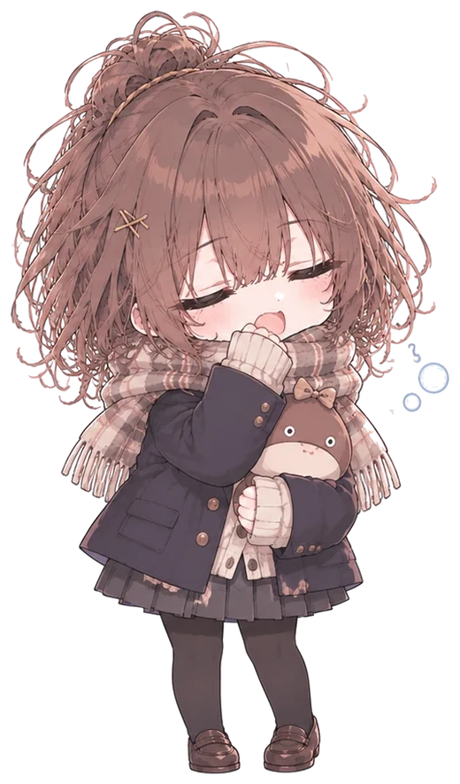
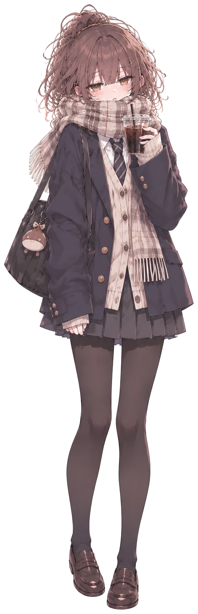

01in your group chat
在群里，接得上话
接入 NapCat、SnowLuma 或 QQ 官方机器人。她会先判断一句话是不是在对她说、值不值得接，再决定开不开口；群友之间的话不会被当成在问她。发言有限速，接话积极度可以调，不会刷屏。
- 对话对象判断
- 接话积极度
- 发言限速
- 本地预筛省调用
开源 · MIT 许可 · Windows / 源码
本机运行的 AI 聊天伙伴
装在你自己的电脑上。在网页里和她聊天，也能带她进 QQ 群；她会记住重要的事，学会群里的说法，挑合适的表情包。聊天和记忆都留在你的电脑上。

today's mascot佐藤栞 · 今天也在喝冰美式what she does
第一次用只需要一个模型服务的地址和密钥。QQ、记忆检索、电脑能力和更细的模型分工，都可以以后慢慢打开。
01in your group chat
接入 NapCat、SnowLuma 或 QQ 官方机器人。她会先判断一句话是不是在对她说、值不值得接，再决定开不开口；群友之间的话不会被当成在问她。发言有限速，接话积极度可以调，不会刷屏。
02long-term memory
重要的人和事会写成带来源的长期记忆，标上重要度和有效期；随口一提的事过一阵就淡了，同一件事换个说法讲也会合并。记忆档案里随时可以查看和修改，每次回复只带最相关的几条。
03stickers
上传你自己的表情包（图片或压缩包都行），或者让她在群里收集。识图模型给每张写好含义、分类和图里的字，聊天时按语境挑一张合适的发；同一个聊天里最近发过的不会马上重复。
04on your own PC
Windows 安装版和便携版无需 Python，打开就是独立窗口。聊天、记忆和设置都存放在运行 Shiori 的电脑上。管理员授权后，她还能帮你在本机处理文件、运行命令；权限默认关闭，随时可以收回。
学会群里的黑话和说法，确认后的词义在群里共享；待审的词可以设过期，也能在 QQ 私聊里审核。
人格蒸馏自动整理角色资料；角色日程安排她的作息和日记，让每次聊天都像同一个人。
聊天、判断、记忆和整理可以用不同的模型；统计页按用途显示用量和一次回复的时间花在哪。

meet our mascot
佐藤 栞
外号「栗子」Kuriko
……也不是特意帮你的，只是刚好有空而已。
懒散、毒舌、嘴硬心软。新安装的 Shiori 默认就是她，你也可以随时换成自己的人格。
three steps
安装版一键安装，便携版完整解压后运行 shiori.exe。第一次打开时设置登录密码。
在快速入门里填服务商的 API 地址和密钥，选好聊天模型，点一下测试就能用。
打开 Chat 工作台说一声“你好”。QQ、记忆检索和电脑能力都可以以后再开。
download
日常使用选稳定版。已经装好的 Shiori，在右上角“版本与更新”里就能直接升级。
shiori.exe；源码版按 README 用 Python 3.11–3.13 启动。.sha256 文件。版本列表暂时读不到，请到 GitHub 发布页下载。